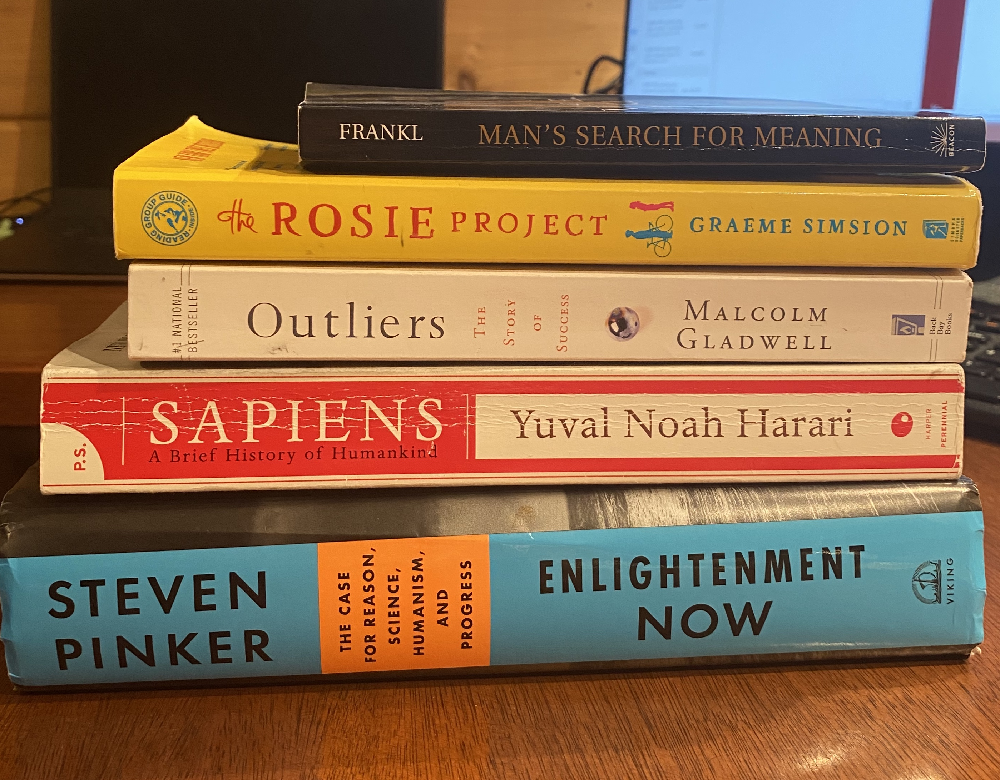

I have compiled a list of the five most impactful books that I have read over the last few years. The first three additions to this list are eye openers – books that give you a new perspective on the world, and the last two consist of one work of fiction and then the most influential book I have ever read. Reading is a sort of lost art but as you are here today, proving me wrong, maybe I can pique your interest in any one of these books. Because I have all of them and feel very strongly that others should read them too, I would be happy to lend them to you. Just sent me a message and we will work something out. Reading to learn and for enjoyment is a fantastic thing and any of these would be a great place to start (or continue).
Outliers
By Malcom Gladwell
Outliers is the story of why the rich and famous are rich and famous. Not the inherited wealth kind but self-made successful individuals. The book illustrates the odd similarities to how they became successful and pins it down to luck, timing, and hard work. I am sure many of you have heard that it takes ten thousand hours to become an expert at something; well that comes from this book. The book is filled with interesting studies that range from the success of hockey players to the disparity in reading levels between upper- and lower-class individuals. The statistics are wonderful, and the conclusions made thereafter are interesting and insightful.
This was one of my eye-openers because it helped elucidate that talent and intelligence is not everything. Hard work, timing, and a good deal of luck are all necessary for you to be successful. I feel that that is a fantastic message for anyone who is at all interested in entrepreneurship or gaining a following online.
Sapiens
By Yuval Noah Harari
I am particularly fond of history, but this may have been the most enjoyable nonfiction reading experience I have ever had. It is written so much like a story that you cannot help but put it down. Then when you finish a chapter and look back, you realize you just learned a thousand years of human history. Yuval Noah Harari, a world-renown historian has a unique and cynical approach to the narrative of human history that is a call for global change. The book is approximately 400 pages long but is supplemented with brilliant images and figures that keep the subject matter interesting. Even if you are not a history person, this reading will help you understand the magnitude of human history and the unique and meaningful position we find ourselves in today. I included it under my eye-openers for this very reason but also because the book is not Americentric. It does not frame all of history as if it were born from two American parents but attacks this monumental undertaking that is all of human history, with an objective thorough approach that we do not usually have exposure to. I finished the book in a little over two days and everyone whom I have talked to about it has loved it.
The book leads into his bleak predictions of the future with the power of artificial intelligence and modern computing but leaves those claims for a sequel. I have read the sequel, but I would just stick to Sapiens if I were you. It is a fascinating reading experience and helps to put perspective to our lives.
Enlightenment Now
By Steven Pinker
This work of nonfiction has a tremendous subtitle of, “The case for reason, science, humanism, and progress” that really describes the essence of the book. Steven Pinker, a Professor of Psychology at Harvard University aims to explore the true nature of well being around the world through the lense of data. He explains how the complex and highly contested claim that the world is getting better and then backs it up with 500 pages of evidence and beautifully put together graphs. This book is a certified eye opener and challenges the recent ideal that the world is descending into chaos. With chapters on nearly every measure of wellbeing including physical health, mental health, happiness, leisure time and so on, it is clearly illustrated that right now is the best possible time to be a human. A quote from Barack Obama that really resonates with me as well as the book is:
If you had to choose one moment in history in which you could be born, and you didn’t know ahead of time who you were going to be–what nationality, what gender, what race, whether you’d be rich or poor, gay or straight, what faith you’d be born into–you wouldn’t choose 100 years ago. You wouldn’t choose the fifties, or the sixties, or the seventies. You’d choose right now. If you had to choose a time to be, in the words of Lorraine Hansberry, “young, gifted, and black” in America, you would choose right now.
This book gives all of the necessary evidence to believe that the world is become a better place for most people on earth. It does not deny the reality that bad things still happen, but just points to the overwhelming good that isn’t covered in the media.
The Rosie Project
By Graeme Simsion
This may be my favorite work of fiction that I have ever read. I have read Magic Treehouse books, so you know it has to be good. It is a lovely little romantic, absurdly funny, edge of your seat novel that tells the story of a hyper-intellectual attempting to find love. It is funny and sweet, and I just could not put the book down. The main character is loosely reminiscent of Sheldon from the big bang theory, so if you are a fan of dry humor, prepare to exhale a few times out of your nose while you are reading. There are twists, turns, and roadblocks that keep the plot interesting and fulfilling. I have lent this book to four people and they have all loved it. It is a fantastic read, and I recommend it to anyone who enjoys a good story.
I do not read a ton of fiction, so if you are also that way, do not worry. This is well worth stepping out of pure information for a good, wholesome, laugh. Graeme Simsion put together a wonderful book.
Mans Search for Meaning
By Viktor Frankl
I made a pretty bold claim earlier that this was the most influential piece of writing that I have ever read. I stand by that. This is a true story of a Jewish Psychiatrist living through the horrors of the Holocaust. It is a firsthand account of how individuals who were exposed to the worst conditions humanly possible, were able to push through. It attests to finding meaning in life, whether that is through religion or a vocation, or any other source, and displays that meaning gets you through the hard times. This quote by Nietzsche is the sole embodiment of what this story is.
"He who has a why to live can bear almost any how"
Frankl describes the absolute destitution these individuals faced while providing timeless advice for generations to come. This book serves as a testament to history but also to philosophy and finding the meaning of life for yourself.
The second part of the book is a description of the psychotherapy techniques he used and developed while in the concentration camps. If you are not interested in that sort of thing it does not directly add to the first half so it could be skipped. I recommend this book to every individual regardless of if you are going through a hard time or not. It really makes you think.